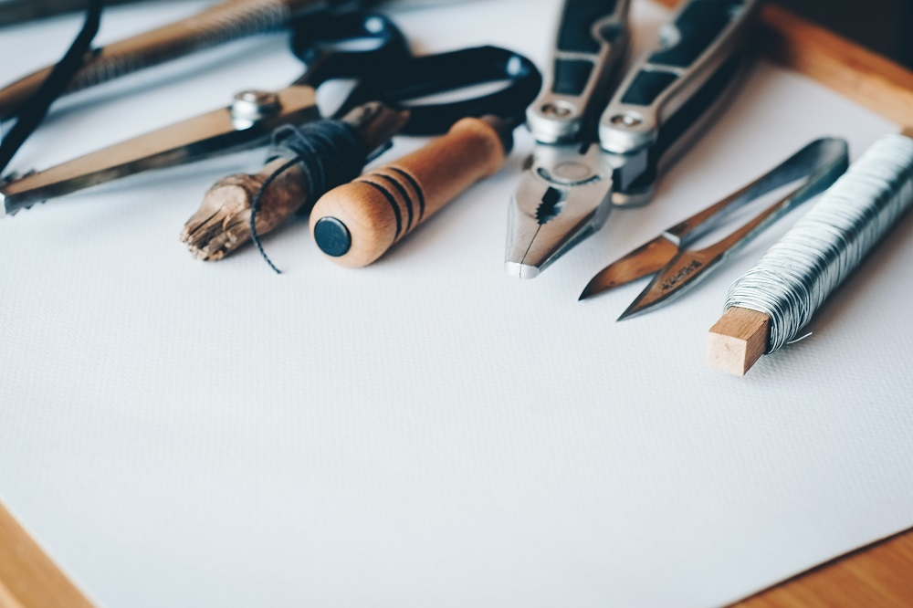

我們是一個熱愛手工藝的平台，致力於推廣與分享獨特的創作理念。我們相信手工藝是一種獨特而有價值的藝術形式，它承載著創作者的熱情、創意和專業技能。 在我們的平台上，您可以探索到各種精心製作的手工作品，從編織到陶藝，從木工到紡織品，每一件作品都是獨一無二的，背後有著創作者的心血和故事。
我們崇尚手工藝的獨特之處，並鼓勵人們欣賞和支持這種傳統的藝術形式，無論您是手工藝的愛好者還是尋找獨特禮物的人，我們都歡迎您來到我們的平台。讓我們一起探索手工藝的美麗世界，並共享創作者的熱情和創意。請加入我們，一起欣賞和支持手工藝的價值！